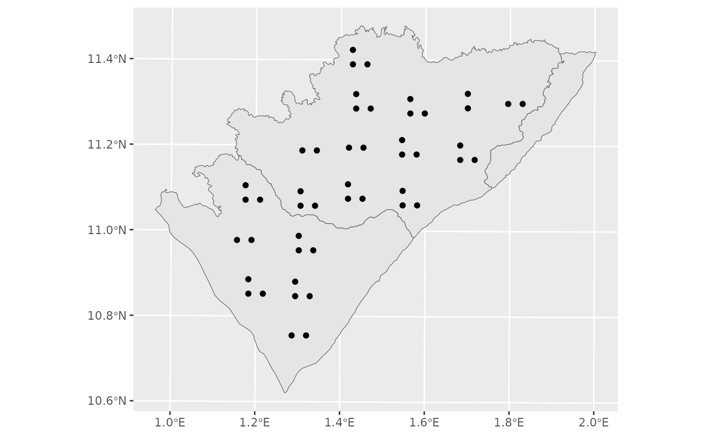

Create a survey design for camera trap deployment
mm_survey_design.RdThis function designs a survey for deploying camera traps within a specified study area. It supports various sampling methods, including random, regular, and clustered sampling, with options for minimum distance constraints and padding around the study area.
Usage
mm_survey_design(
study_area,
method = "random",
total_site,
total_cluster,
type_in = "random",
min_distance = NULL,
distance = NULL,
padding = 10,
nest_padding = 0,
set_seed = NULL,
verbose = TRUE
)Arguments
- study_area
An
sfpolygon representing the area where the survey will be conducted.- method
A character string specifying the sampling method. Options include:
"random": Randomly distributes camera trap sites within the study area.
"regular": Creates a regularly spaced grid of sites.
"regular_cluster": Generates regularly spaced clusters within which sites are sampled..
"random_cluster": Creates randomly clusters within which sites are sampled.
"mask": Uses existing features in the
study_areaobject to define sampling areas, with user-defined site allocation.
- total_site
An integer specifying the number of sites to be sampled per cluster (for "regular_cluster" and "random_cluster") or the total number of sites (for "random" and "regular" methods). For the "mask" method, this can be a single value (applied to all features) or a vector specifying the number of sites per feature in
study_area.- total_cluster
An integer defining the number of clusters (required for "random_cluster").
- type_in
A character string indicating the within-cluster sampling type. Options:
"regular": Places sites in a structured grid within each cluster or feature (for "mask" method).
"random": Distributes sites randomly within each cluster or feature (for "mask" method).
- min_distance
A numeric value specifying the minimum allowed distance between sampled sites (applied only for the random methods).
- distance
A numeric vector specifying the distance (x and y spacing) between grid cells for regular sampling methods. If a single value is provided, it is used for both dimensions.
- padding
A numeric value defining the buffer distance to exclude areas near the edge of the study area.
- nest_padding
A numeric value defining an additional buffer applied within each cluster or mask feature to avoid placing sites near the edges of those units.
- set_seed
An optional integer for setting the random seed to ensure reproducibility.
- verbose
A logical indicating whether to display warnings and messages (default:
TRUE).
Note
The function ensures that the study area has a projected coordinate reference system (CRS) before proceeding. If a geographic CRS is detected, an error is raised.
Examples
library(ggplot2)
# Load example dataset
data("pendjari")
# Transform study area to a projected coordinate system
pendjari_trans <- pendjari %>%
sf::st_transform(crs = "EPSG:32631")
# Random sampling method with 15 sites, ensuring a minimum distance of 5000 meters between sites
random_sdes <- mm_survey_design(study_area = pendjari_trans, method = "random", verbose = TRUE,
total_site = 15, min_distance = 5000, padding = 2000,
set_seed = 123)
# Regular sampling method using a grid with cell sizes of 4000m x 6000m
regular_sdes <- mm_survey_design(study_area = pendjari_trans, method = "regular", verbose = TRUE,
distance = c(4000, 6000), padding = 2500, set_seed = 123)
# Random-cluster sampling: 8 clusters, each containing 5 sites, ensuring a minimum site distance of 2000 meters
rand_c_sdes <- mm_survey_design(study_area = pendjari_trans,
method = "random_cluster", verbose = TRUE,
total_cluster = 8, total_site = 5,
distance = c(7000, 3000), min_distance = 2000,
padding = 2000, nest_padding = 500, set_seed = 123)
#> Warning: Cluster size doesn't allow to have 5 sites per cluster. Try to adjust distance and min_distance
# Random-cluster sampling with regularly distributed sites: 22 clusters, each with 8 regularly spaced sites
rand_c_reg_sdes <- mm_survey_design(study_area = pendjari_trans,
method = "random_cluster", verbose = TRUE,
total_cluster = 22, total_site = 8, type_in = "regular",
distance = c(6000, 3000),
padding = 1000, nest_padding = 0, set_seed = 123)
# Regular-cluster sampling: Grid with 3 sites per cluster, ensuring a minimum distance of 2000 meters between sites
reg_c_sdes <- mm_survey_design(study_area = pendjari_trans,
method = "regular_cluster", verbose = TRUE,
total_site = 3, distance = c(7000, 6000),
min_distance = 2000, padding = 2000, set_seed = 123)
#> Simple feature collection with 28 features and 1 field
#> Geometry type: POINT
#> Dimension: XY
#> Bounding box: xmin: 300935.6 ymin: 1188880 xmax: 375203.1 ymax: 1250255
#> Projected CRS: WGS 84 / UTM zone 31N
#> First 10 features:
#> cluster x
#> 1 cluster_1 POINT (330170.3 1249595)
#> 2 cluster_1 POINT (332860.8 1249894)
#> 3 cluster_2 POINT (343060.1 1249925)
#> 4 cluster_2 POINT (347059.9 1249727)
#> 5 cluster_3 POINT (358208.8 1248588)
#> 6 cluster_3 POINT (360620.6 1248825)
#> 7 cluster_4 POINT (375203.1 1248952)
#> 8 cluster_4 POINT (370870.3 1250255)
#> 9 cluster_5 POINT (314593.9 1238168)
#> 10 cluster_5 POINT (319216.6 1238048)
#> Warning: Cluster size doesn't allow to have 3 sites per cluster. Try to adjust distance and min_distance
# Regular-cluster sampling with regularly distributed sites within clusters
reg_c_reg_sdes <- mm_survey_design(study_area = pendjari_trans,
method = "regular_cluster", verbose = TRUE,
total_site = 3, distance = c(7000, 6000), type_in = "regular",
padding = 1000, set_seed = 123)
# A plot with
ggplot()+
geom_sf(data = pendjari_trans)+
geom_sf(data = reg_c_reg_sdes)

# Mask-based sampling: Sites are sampled within existing features of the study area
mask_sdes <- mm_survey_design(study_area = pendjari_trans,
method = "mask", verbose = TRUE,
total_site = 13, distance = c(7000, 6000),
min_distance = 2000, nest_padding = 2000, set_seed = 123)
#> Warning: Maximum number of points could not exced 11 with minimum distance of 2000.
# Mask-based sampling with regularly spaced sites per feature
mask_regular_sdes <- mm_survey_design(study_area = pendjari_trans,
method = "mask", verbose = TRUE, type_in = "regular",
total_site = c(8, 2, 13), distance = c(7000, 6000),
min_distance = 2000, nest_padding = 1000, set_seed = 123)
mask_regular_sdes
#> Simple feature collection with 21 features and 0 fields
#> Geometry type: POINT
#> Dimension: XY
#> Bounding box: xmin: 283116.6 ymin: 1180635 xmax: 376253.4 ymax: 1259724
#> Projected CRS: WGS 84 / UTM zone 31N
#> First 10 features:
#> geometry
#> 1 POINT (311276.4 1180635)
#> 2 POINT (311276.4 1194715)
#> 3 POINT (325356.3 1194715)
#> 4 POINT (297196.5 1208795)
#> 5 POINT (311276.4 1208795)
#> 6 POINT (325356.3 1208795)
#> 7 POINT (283116.6 1222875)
#> 8 POINT (297196.5 1222875)
#> 9 POINT (365397.8 1231289)
#> 10 POINT (374269.6 1240161)